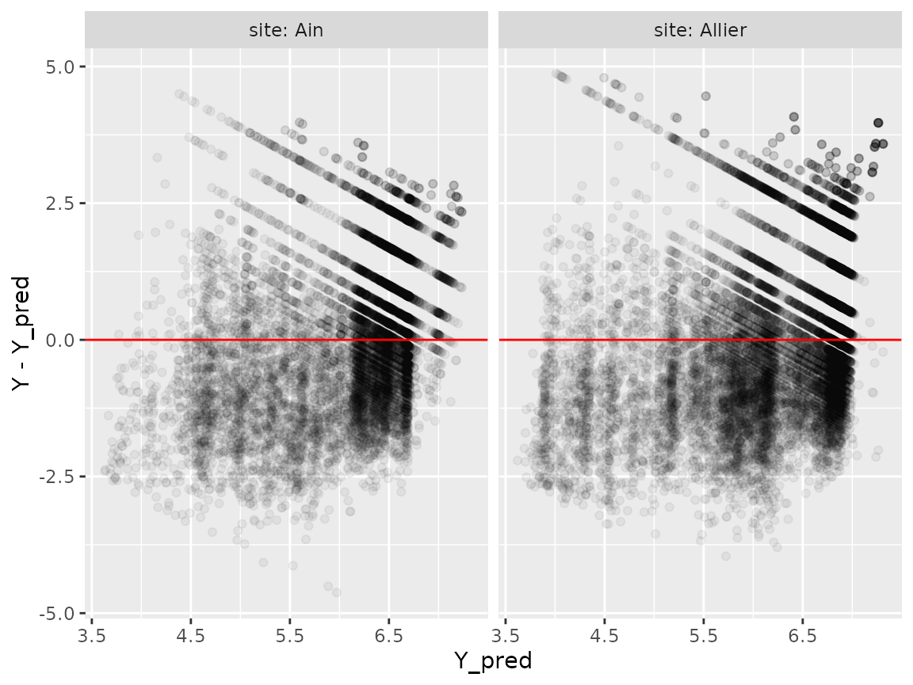
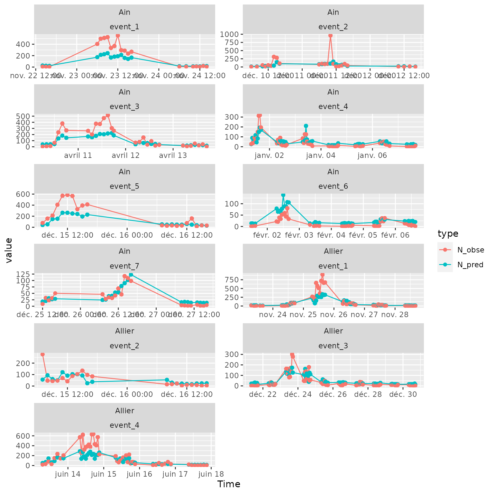

1._woody_calculate_flux.Rmd
knitr::opts_chunk$set(warning=FALSE,message=FALSE)
library(woody)
library(tidyverse)
library(DiagrammeR)First, let’s see how the predictions of log-flux \(Y_{pred}\) (estimated through the Random Forest) might be used to calculate predictions of flux \(N_{pred}\). It is indeed necessary to take into account the residuals error of the model to do so.
\[Y =log(N)= log(3600/W)\]
where :
Let’s have a look at the distribution of residuals:
tib_WpQc=readRDS("../data-raw/results/tib_WpQc.RDS")
Wdata_pred=tib_WpQc %>%
select(Wdata) %>%
tidyr::unnest(Wdata, .name_repair="minimal")
p=ggplot(Wdata_pred,aes(x=Y_pred,y=Y-Y_pred))+
geom_point(alpha=0.05)+
facet_grid(cols=vars(site),
labeller = labeller(.rows = label_both,
.cols = label_both))+
geom_hline(aes(yintercept=0), col='red')
plot(p)
The observed value \(Y\) is distributed around predicted value \(Y_{pred}\), in an approximately Gaussian distribution with standard deviation \(\sigma\), hence we can hypothesize that
\[Y \sim \mathcal{N}(\mu,\sigma) \]
\[E(Y)=E(Y_{pred})=\mu\]
\(\sigma\), as the residual standard deviation, corresponds to a measure of error of the model predicting \(Y=log(N)\).
Here is an estimate of \(\sigma\) for both sites:
## # A tibble: 2 × 2
## site sigma
## <fct> <dbl>
## 1 Ain 1.39
## 2 Allier 1.49For now, we will estimate roughly that \(\sigma=1.5\) for both sites.
On the log scale, \(E(Y)=E(Y_{pred})\), but going back to a natural (not logged) scale for fluxes:
\[E(N)=E(e^Y)=e^{E(Y)+\frac{\sigma^2}{2}}\]
Hence \(E(N)>e^{E(Y)}\): the expected value of \(N\), \(E(N)\), is higher than the exponential of \(E(Y)\).
This can also be understood, in a more empirical way, like this:
The error in \(log(N)\) is symmetrical, which means that \(N\) can equally be a bit lower or a lot higher than predicted (on a natural scale). Hence the mean of values on this natural scale is higher that just the exponential of the mean on the log scale.
In the following section, we will hence use this estimate of \(\sigma\) to convert \(Y_{pred}\) estimates to \(N_{pred}\) estimates.
Qdata hourly and calculate \(N_{pred}\) and \(N_{obs}\)
Qdata hourly
Let’s interpolate Qdata at an hourly timescale and use these interpolated, hourly data to calculate \(Y_{pred}\).
Wdata
We want to compare these values \(N_{pred}\) with the observed number of wood pieces during an hour \(N_{obse}\).
The observation of wood pieces is not continuous, so that we have to take into account, for each hour, the proportion of time the observation of wood pieces really occurred \(P_{obs}\). This information is retrievable from Adata (A for “annotation”).
\(N_{obse}=N_{obs}/P_{obs}\)
tib_WnQn=tib_WQn %>%
mutate(Adata=purrr::map2(.x=apath,.y=site,
~import_Adata(path=.x,site=.y))) %>%
mutate(Wdata=purrr::map2(.x=Wdata,.y=Adata,
~summarise_Wdata(Wdata=.x,Adata=.y)))Once imported and cleaned, this how Adata (first lines, for the Ain site) looks like:
| Time | P_obs |
|---|---|
| 2007-11-22 14:00:00 | 0.3166667 |
| 2007-11-22 15:00:00 | 0.1833333 |
| 2007-11-22 16:00:00 | 0.2500000 |
| 2007-11-23 06:00:00 | 0.0544444 |
| 2007-11-23 07:00:00 | 0.2500000 |
| 2007-11-23 08:00:00 | 0.2452778 |
So this is how Wdata now looks like, with a new extrapolated estimate for the observed flux \(N_{obse}\) (first lines, for the Ain site)
| site | event | sitevent | Time | Length | Date | N_obs | P_obs | N_obse |
|---|---|---|---|---|---|---|---|---|
| Ain | event_1 | Ain_event_1 | 2007-11-22 14:00:00 | 1.51 | 2007-11-22 | 3 | 0.3166667 | 9.473684 |
| Ain | event_1 | Ain_event_1 | 2007-11-22 14:00:00 | 1.53 | 2007-11-22 | 3 | 0.3166667 | 9.473684 |
| Ain | event_1 | Ain_event_1 | 2007-11-22 14:00:00 | 4.13 | 2007-11-22 | 3 | 0.3166667 | 9.473684 |
| Ain | event_1 | Ain_event_1 | 2007-11-22 15:00:00 | 5.29 | 2007-11-22 | 1 | 0.1833333 | 5.454546 |
| Ain | event_1 | Ain_event_1 | 2007-11-22 16:00:00 | 1.32 | 2007-11-22 | 1 | 0.2500000 | 4.000000 |
| Ain | event_1 | Ain_event_1 | 2007-11-23 06:00:00 | 3.79 | 2007-11-23 | 22 | 0.0544444 | 404.081633 |
To make the production of plots easier, we unnest Ndata from tib_WnQnN:
R2=tib_WnQnN %>% select(site,Ndata) %>%
mutate(R2=purrr::map_df(Ndata,calc_rf_R2,type="N")) %>%
tidyr::unnest(R2)
R2## # A tibble: 2 × 9
## # Groups: vars, q1.5, station, wpath [2]
## vars q1.5 station wpath site Ndata SCR SCT R2
## <chr> <dbl> <chr> <chr> <chr> <list> <dbl> <dbl> <dbl>
## 1 Ain 840 "V294201001 " ../data-raw/wo… Ain <tibble> 3.87e8 4.25e8 0.0907
## 2 Allier 460 "K340081001" ../data-raw/wo… Alli… <tibble> 1.01e9 1.06e9 0.0535
Ndataplot=Ndata %>%
tidyr::pivot_longer(cols=c(N_pred,N_obse), names_to="type") %>%
filter(!is.na(event))
ggplot(Ndataplot, aes(x=Time,y=value))+
geom_path(aes(col=type))+
geom_point(aes(col=type))+
facet_wrap(site~event, scales="free", ncol=2)